Removing and Installing/Replacing Intermediate Levers (N52K)
11 37 010 - Removing and installing/replacing intermediate levers (N52K)

Special tools required:
- 11 4 270 11 4 270 Removal and Mounting Fixture
- 11 4 450 11 4 450 Locating Fixture
- 11 4 481 11 4 480 Placement Boards (2 X)

Important!
Aluminium-magnesium materials.
No steel screws/bolts may be used due to the threat of electrochemical corrosion.
A magnesium crankcase requires aluminium screws/bolts exclusively.
Aluminium screws/bolts must be replaced each time they are released.
Aluminium screws/bolts are permitted with and without
color coding (blue).
For reliable identification:
Aluminium screws/bolts are not magnetic.
Jointing torque and angle of rotation must be observed without fail (risk of damage).

Necessary preliminary tasks:
- Remove cylinder head cover Service and Repair
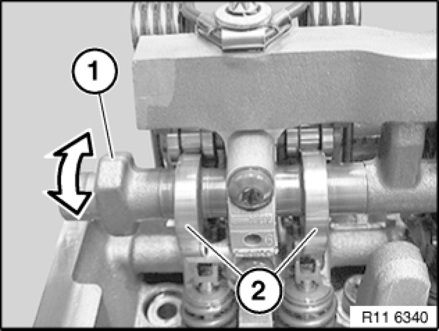
If necessary, move eccentric shaft (1) on twin surface to minimum lift (2).
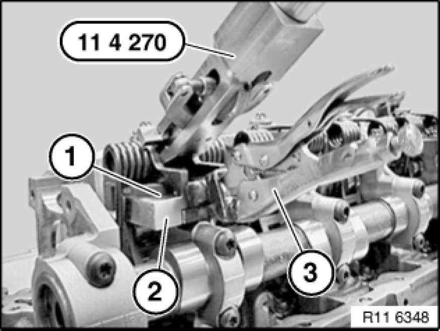
Note:
Oil spray nozzle must be removed from 3rd cylinder (make a note of installation position of oil spray nozzle).
Secure special tool 11 4 270 11 4 270 Removal and Mounting Fixture with gripping pliers (3) to guide block (2).
Important!
Special tool 11 4 270 11 4 270 Removal and Mounting Fixture is only secured to guide block (2).
Adjusting the gripping pliers (3) on special tool 11 4 270 11 4 270 Removal and Mounting Fixture is not permitted. Risk of damage!
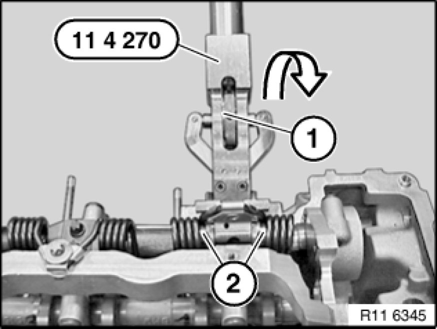
Warning!
Risk of injury in event of incorrect use.
Important!
Improper handling. Risk of damage!
Secure both bearing pins (2) in torsion springs with knurled screw (1) of special tool 11 4 270 11 4 270 Removal and Mounting Fixture.
Press special tool 11 4 270 11 4 270 Removal and Mounting Fixture in direction of arrow as far as it will go.
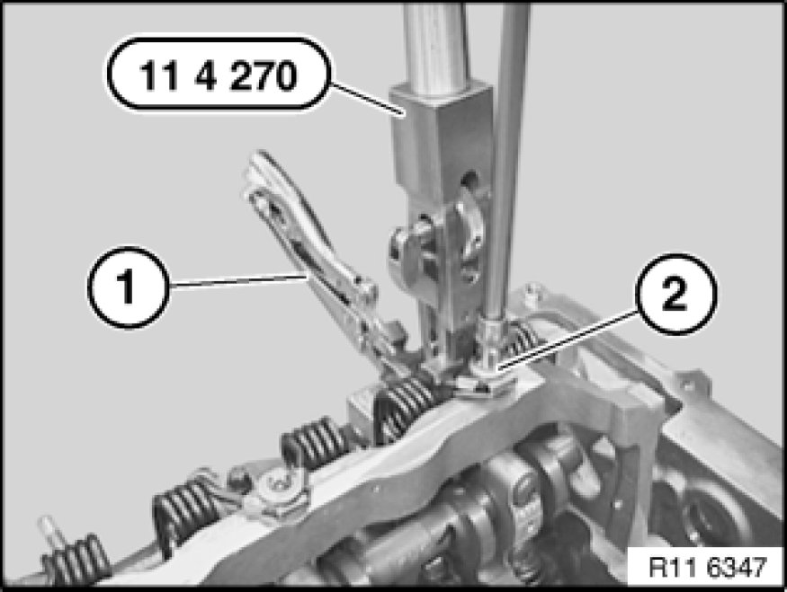
Release screw (2) of torsion spring.
Tightening torque 11 37 2AZ 11 37 Variable Valve Gear.
To avoid jamming of screw (2) with torsion spring, it is necessary when releasing screw (2) to relieve the pretension on special tool 11 4 270 11 4 270 Removal and Mounting Fixture uniformly.
Important!
Thread on cylinder head. Risk of damage!
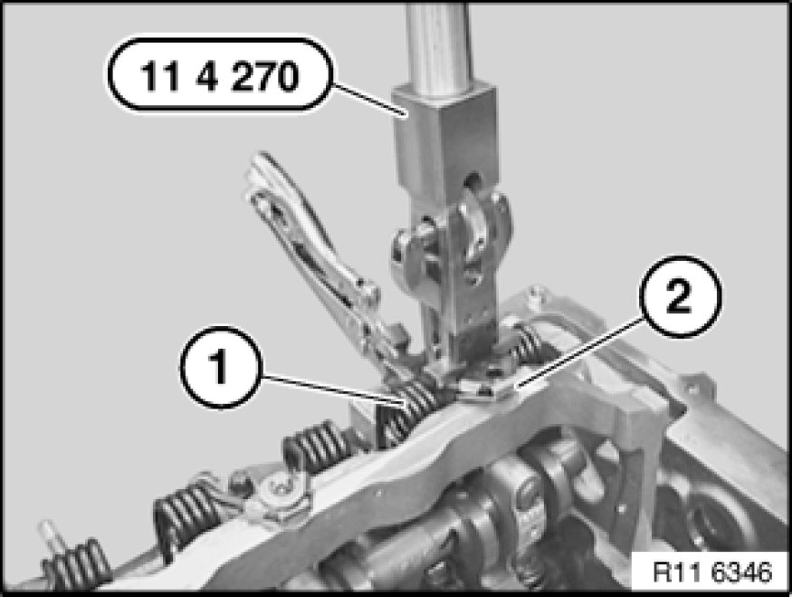
Relieve tension on torsion spring (1) with special tool 11 4 270 11 4 270 Removal and Mounting Fixture.
Note:
Metal lug (2) cannot be disassembled and must not be removed.
Installation Note:
Replace torsion spring (1) if metal lug (2) is faulty.
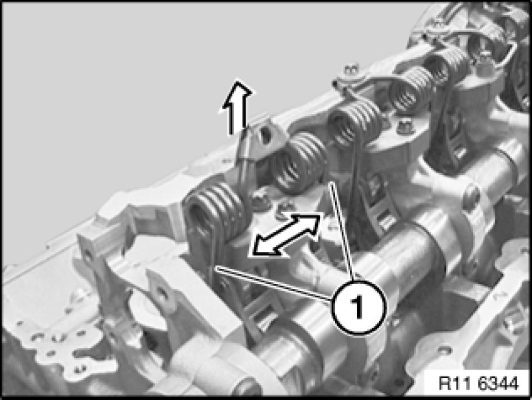
Press torsion spring apart at positions (1).
Remove torsion spring towards top.
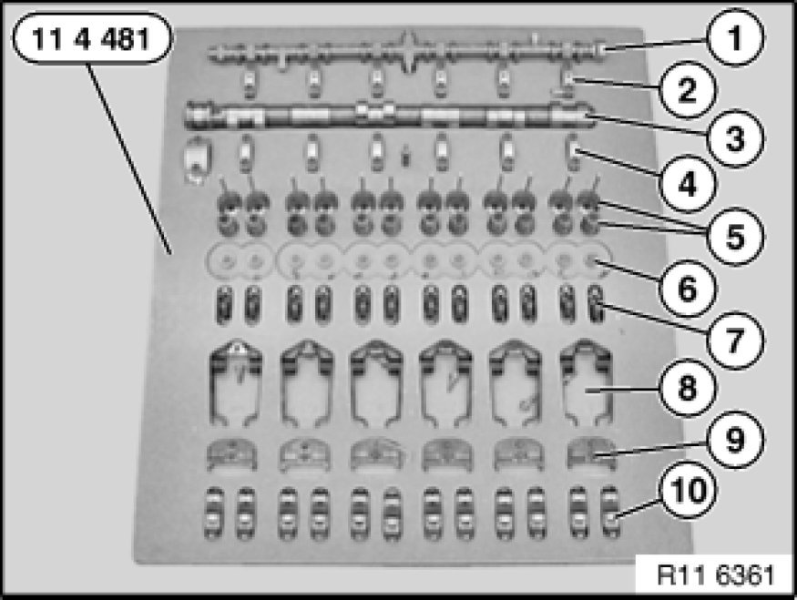
Important!
Uniform distribution must not be changed.
Place all components in clean and neat order in special tool 11 4 481 11 4 480 Placement Boards (2 X).
All components must be reinstalled in the same positions in an engine which has already been in use.
1 - Eccentric shaft with bearing
2 - Bearing caps of eccentric shaft (set out in order)
3 - Inlet camshaft
4 - Bearing caps of inlet camshaft (set out in order)
5 - Intake valves with valve springs
6 - Valve plates and valve cotters
7 - Cam followers with HVCA elements (set out in order)
8 - Torsion springs
9 - Guide blocks (set out in order)
10 - Intermediate levers (set out in order)
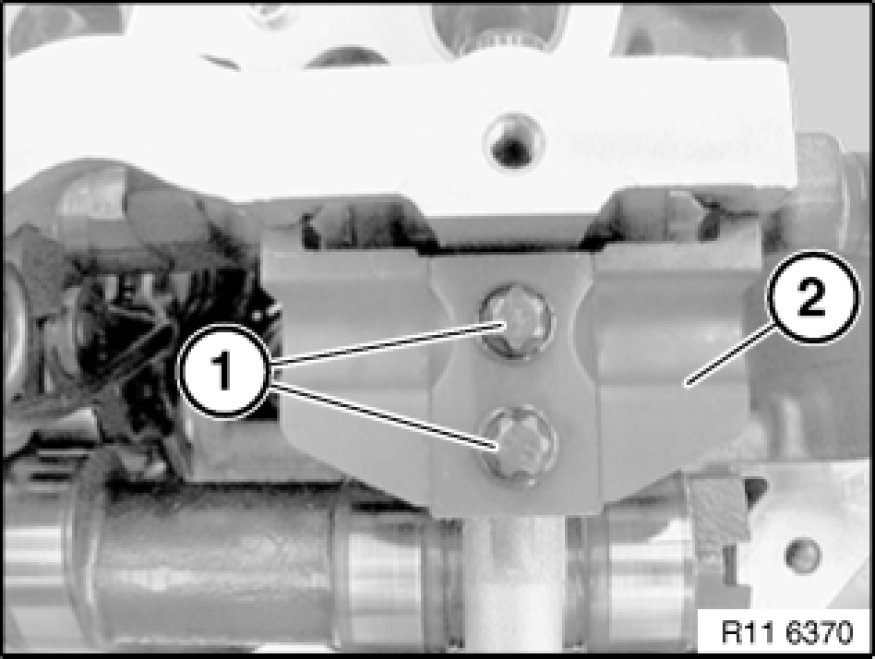
Release screws (1) on guide block (2).
Tightening torque 11 37 1AZ 11 37 Variable Valve Gear.
Place all guide blocks (2) in neat order in special tool 11 4 481 11 4 480 Placement Boards (2 X).
Installation Note:
Mixing up the guide blocks (2) will cause the engine to suffer idle-speed fluctuations.
This will result in maladjustment of uniform distribution.
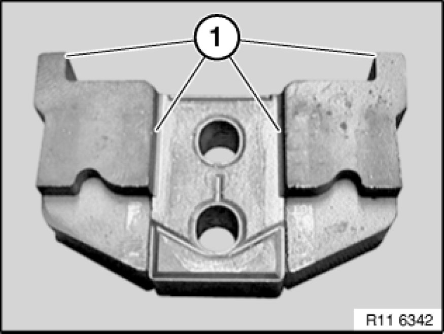
Installation Note:
All contact surfaces (1) of guide block must be clean and free from oil and grease. If necessary, clean contact surfaces (1).
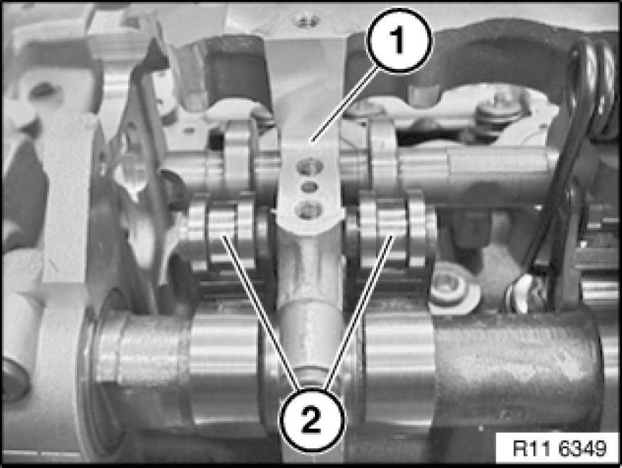
Lift out intermediate levers (2).
Place all intermediate levers (2) in neat order in special tool 11 4 481 11 4 480 Placement Boards (2 X).
Installation Note:
Mixing up the intermediate levers (2) will cause the engine to suffer idle-speed fluctuations.
Installation Note:
All contact surfaces (1) must be clean and free from oil and grease. If necessary, clean contact surfaces (1).
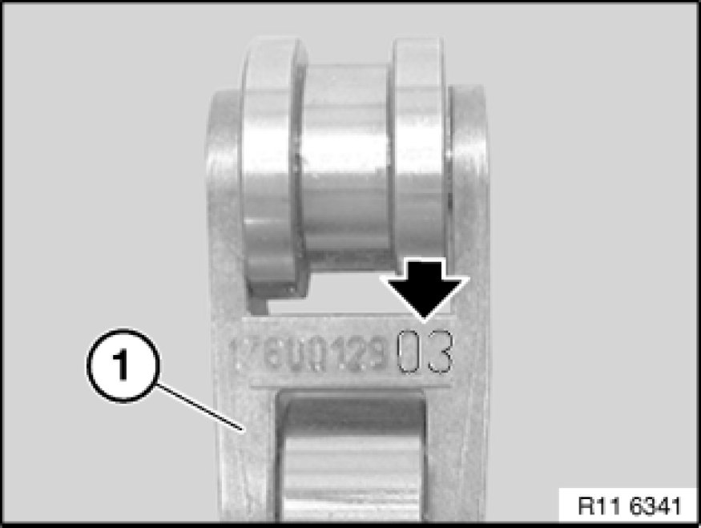
All intermediate levers (1) are classified.
All intermediate levers (1) must be reinstalled in the same positions in an engine which has already been in use.
Important!
Before installing intermediate levers (2), make sure cam followers are correctly positioned.
Risk of damage!
Install intermediate levers (2).
Fit guide block (2) cleanly into opening.
Tighten screws (1) hand-tight.
Check that intermediate levers are in correct installation position.
Release screws (1) by a 1/4 turn.
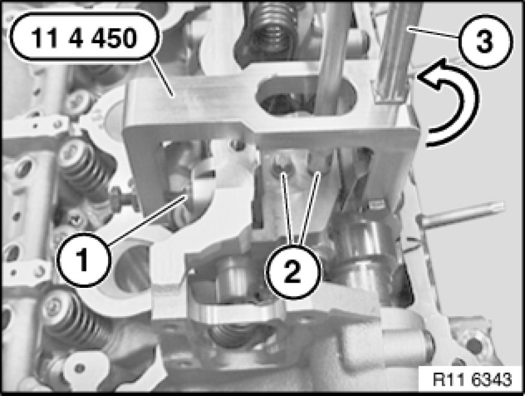
Secure special tool 11 4 450 11 4 450 Locating Fixture to bolt connection (1) of eccentric shaft.
Turn eccentric lever (3) on special tool 11 4 450 11 4 450 Locating Fixture in direction of arrow.
Guide block is now pretensioned.
Insert screws (2) of guide blocks.
Tightening torque 11 37 1AZ 11 37 Variable Valve Gear.
Installation Note:
At cylinder no. 3, the guide block can be pre-installed with one screw (internal) only.
Oil spray nozzle is fitted only after torsion spring has been installed.
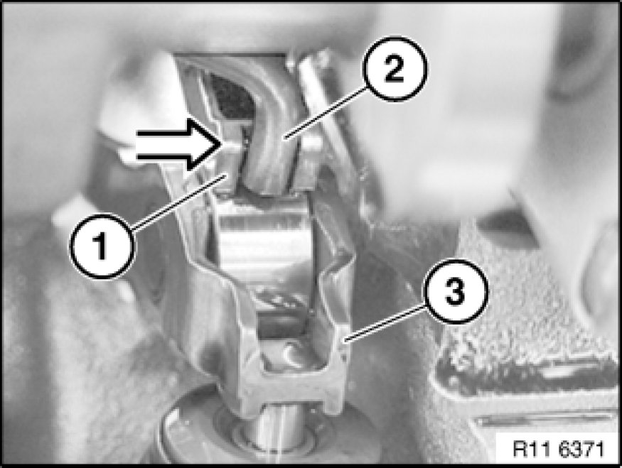
Install torsion spring (2) on guide block.
Installation Note:
Insert torsion spring (2) in intermediate lever (1) (see arrow).
Check that cam follower (3) is in correct installation position.
Secure special tool 11 4 270 11 4 270 Removal and Mounting Fixture with gripping pliers (3) to guide block (2).
Important!
Special tool 11 4 270 11 4 270 Removal and Mounting Fixture is only secured to guide block (2).
Adjusting the gripping pliers (3) on special tool 11 4 270 11 4 270 Removal and Mounting Fixture is not permitted. Risk of damage!
Warning!
Risk of injury in event of incorrect use.
Important!
Improper handling. Risk of damage!
Secure both bearing pins (2) in torsion springs with knurled screw (1) of special tool 11 4 270 11 4 270 Removal and Mounting Fixture.
Important!
Check torsion spring on intermediate lever to ensure correct installation position.
Press special tool 11 4 270 11 4 270 Removal and Mounting Fixture in direction of arrow as far as it will go.
Insert screw (2) of torsion spring.
Tightening torque 11 37 2AZ 11 37 Variable Valve Gear.
To avoid jamming of screw (2) with torsion spring, it is necessary when inserting screw (2) to increase pretension on special tool 11 4 270 11 4 270 Removal and Mounting Fixture uniformly.
Important!
Thread on cylinder head. Risk of damage!
Remove special tool 11 4 270 11 4 270 Removal and Mounting Fixture.
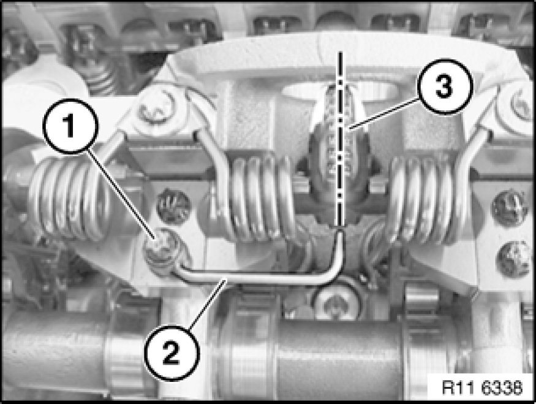
At cylinder no. 3, adjust oil spray nozzle (2) so that oil spray points precisely towards spline teeth (3).
Insert screw (1) with oil spray nozzle (2) (external).
Tightening torque 11 37 4AZ 11 37 Variable Valve Gear.

Assemble engine.